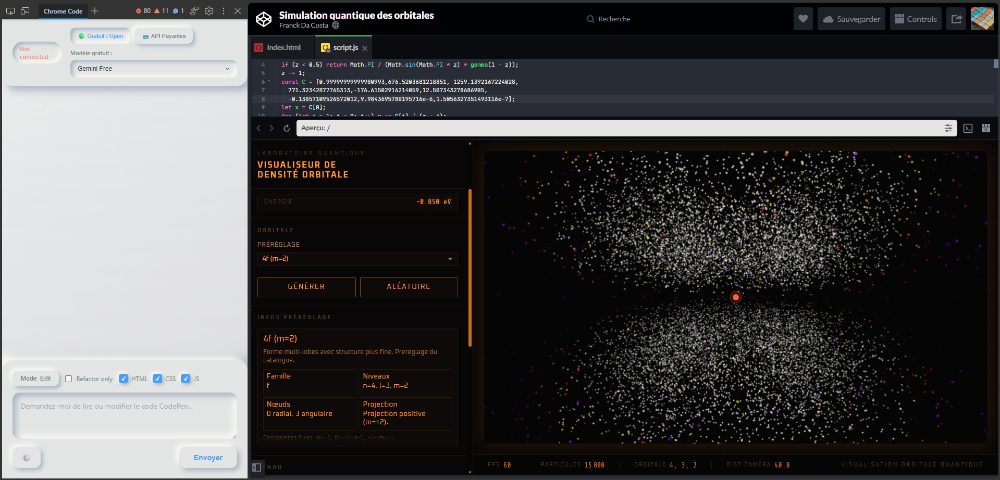

Lire le Pen
Récupération du contenu courant de index.html, style.css et script.js directement dans CodePen 2.0.
Gemini CodePen 2.0 lit, explique et modifie directement les fichiers HTML, CSS et JavaScript d’un Pen dans le nouvel éditeur CodePen 2.0 basé sur CodeMirror 6.

Capture réelle du projet · affichage au ratio natif 1919 × 922
Fonctions principales
L’extension s’intègre comme un panneau DevTools et communique avec les éditeurs CodeMirror 6 de CodePen. Le mode d’édition reste volontairement contrôlé.
Récupération du contenu courant de index.html, style.css et script.js directement dans CodePen 2.0.
Le mode Explain demande une analyse sans autoriser l’écriture dans les éditeurs.
Le mode Edit peut appliquer des modifications seulement dans les scopes HTML, CSS et JS explicitement cochés.
Les changements proposés sont présentés sous forme de diff afin de permettre une vérification avant sauvegarde du Pen.
Le moteur refuse un remplacement ambigu ou introuvable au lieu d’écrire à l’aveugle dans le code existant.
Les clés API sont enregistrées dans chrome.storage.local et les appels cloud partent du service worker.
Workflow
Le panneau DevTools reste le centre du flux : on choisit le mode, les fichiers autorisés et le fournisseur IA avant l’envoi.
Ouvrir le Pen, ses trois onglets de code puis l’onglet Chrome Code dans les DevTools.
Choisir Edit ou Explain, puis limiter l’action à HTML, CSS et/ou JS.
Lire la réponse, inspecter le diff et contrôler le rendu CodePen avant de sauvegarder.
Fournisseurs IA
Le dépôt contient une couche de fournisseurs plus large que son nom : modèles gratuits, APIs payantes et compatibilités locales selon la configuration disponible.
Les modèles et endpoints évoluent : la liste de référence reste background.js et panel.js dans le dépôt.
Architecture
Sécurité
La sécurité documentée du projet se concentre sur le stockage des clés, l’isolation des contextes et le nettoyage du contenu rendu.
Lire SECURITY.md ↗Stockage local via chrome.storage.local. Les appels cloud sont exécutés depuis le service worker.
Le Markdown est rendu avec marked, puis netto{3© avec DOMPurify avant insertion dans l‚Äôinterface.
Les messages entre page, content script et code injecté sont filtrés selon leur source et leur structure attendue.
Installation locale
Chrome Web Store n’est pas nécessaire : le dépôt se charge directement comme extension non empaquetée.
Download ZIPTélécharger le ZIP GitHub et extraire complètement le dossier.
Ouvrir chrome://extensions ou edge://extensions.
Activer le Mode développeur.
Choisir Charger l’extension non empaquetée.
Sélectionner le dossier qui contient manifest.json.
Ouvrir CodePen 2.0 puis l’onglet Chrome Code dans les DevTools.
Open source · MIT
Gemini CodePen 2.0 est basé sur Chrome Code de Mr.doob. Les adaptations de ce dépôt ciblent notamment CodePen 2.0 et son intégration CodeMirror 6.